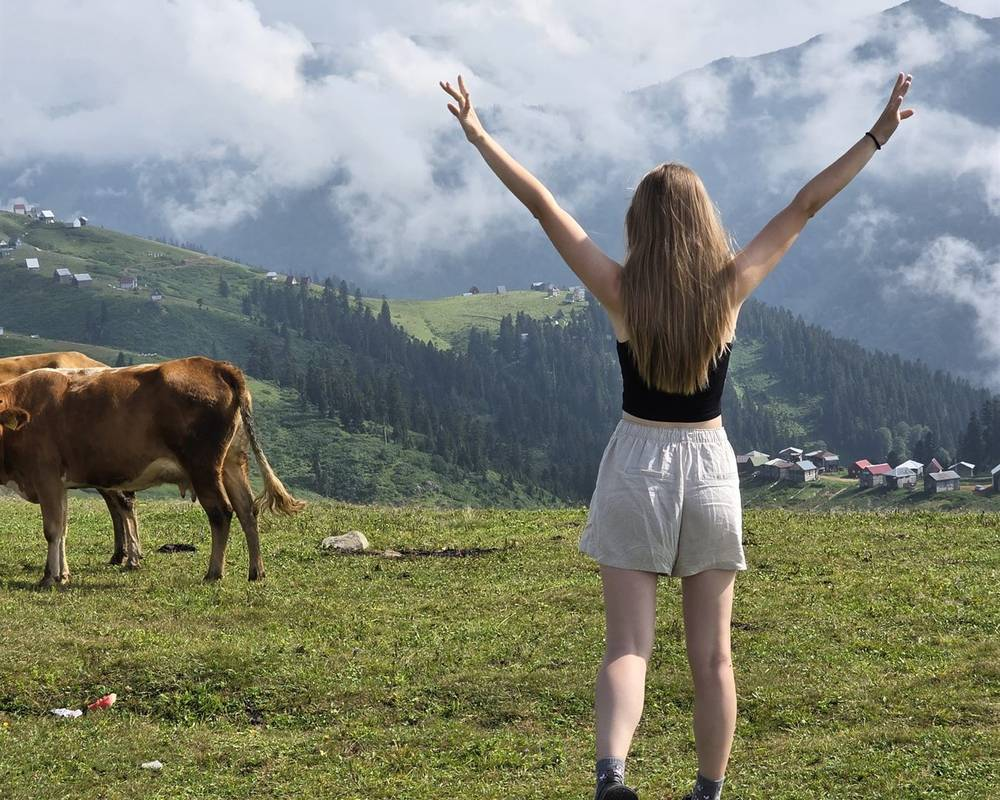

Что взять в Грузию: список вещей для разных сезонов

Правильно собранный чемодан — половина успешного путешествия. Грузия — страна разнообразная: за одну поездку вы можете оказаться на пляже, в горах и на городских улицах. Вот что точно пригодится.
Документы и деньги. Гражданам большинства стран СНГ и ЕС виза не нужна. Возьмите наличные в местной валюте (лари) — в горных деревнях карты не принимают. Курс лучше у банкоматов Bank of Georgia.
Одежда. Для Батуми летом: купальник, лёгкое платье или шорты, вечерняя одежда для ресторанов. Для гор: треккинговые ботинки (обязательно!), тёплый слой (флиска), дождевик. В православные церкви нужно покрыть плечи и ноги — возьмите лёгкий шарф.
Аптечка и прочее. Средство от солнца, крем от насекомых для горных маршрутов, таблетки от укачивания (горные дороги серпантинные). Адаптер европейского типа (тип C/F). Переносной аккумулятор — в горах связь нестабильная.
И главное: оставьте место в чемодане для домашнего вина, чачи и чурчхелы — без этого из Грузии не уезжают.
Осталось выбрать тур. В каждом трансфер из Батуми и гид с сертификатом.